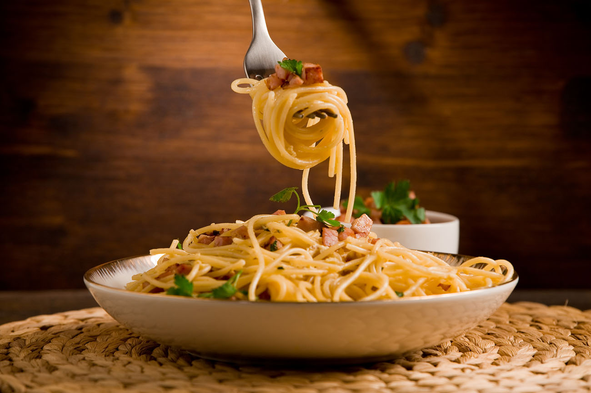

Who doesn’t love pasta? It’s so delicious and offers so many practical advantages that it has become a favorite of both cooks and foodies and a staple of cuisines all around the world. Pasta is incredibly affordable, since it can be bought for cents on the dollar, but it’s also healthy. It contains very little salt, which is amazing for those with circulation problems, and you can also find gluten-free versions, so people allergic to gluten can enjoy it too. Probably there is no easier dish to cook than pasta. Boil water, add the pasta, drain it, add your favorite sauce
